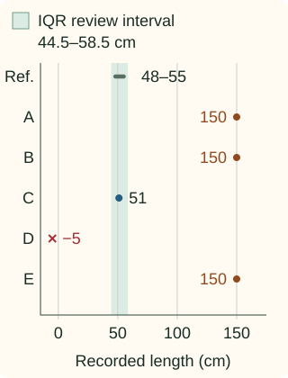

Errors vs Outliers
An outlier is unusual relative to a reference; a data error is an incorrect record. A valid observation can be rare, and a wrong value can fall in the busiest part of the distribution. Cleaning needs evidence about the record, beyond a score that says it looks unusual.
The outlier-method series explains how different scores work. Here we focus on what to do with a flag: investigate its cause, preserve evidence and choose a treatment that fits the prediction task.
Separate a field constraint from a statistical comparison
Suppose a dataset records physical parcel lengths in centimeters. The field requires finite, positive lengths, so −5 cm is invalid. That conclusion comes from the quantity’s meaning, without comparing it to other parcels.
Now take a small reference batch of accepted lengths: 48, 49, 50, 51, 52, 53, 54 and 55 cm. An illustrative IQR rule gives a review interval from 44.5 to 58.5 cm, including its boundaries. A positive length outside this interval is a candidate for investigation; it has not failed the physical-length constraint.
Where did the review interval come from?
Using linear sample quantiles, the first quartile is 49.75 and the third is 53.25. Their difference, the interquartile range, is 3.5. Extend each end by 1.5 times that width: the lower boundary is 49.75 − 5.25 = 44.5, and the upper is 53.25 + 5.25 = 58.5. The IQR chapter derives the quantile calculation and discusses other conventions.
The same observed value can lead to different decisions
These five constructed audit cases use the same field and reference. Assume the reviewed source records or repeat measurements described below establish the stated corrections. The plot shows only the recorded values; choose a case to inspect its additional evidence.

Case A: 150 cm
Screening result: outside the review interval
A and B are equally unusual, but only B is a confirmed error. C looks ordinary and is also wrong. E remains unresolved. D needs correction or a missing/invalid-data policy because a negative physical length cannot be used as recorded.
| Recorded value | Verified valid | Confirmed error |
|---|---|---|
| Inside the interval | A 50 cm reference measurement | C: recorded 51 cm; source gives 18 cm |
| Outside the interval | A: verified 150 cm | B: recorded 150 cm; source gives 50 cm |
Deleting every flagged or invalid row would retain only C from these five cases—and C is one of the confirmed wrong records. It would discard the valid long parcel A. This is why a neater histogram is not evidence of a better dataset.
Use evidence that can explain the discrepancy
Check parsing and units first, then inspect source records, event times, instrument limits and related fields. A misplaced decimal, an incorrect join or a changed source format needs a different repair from a valid change in the population.
Context can change the comparison. A length unusual among small parcels may be ordinary among oversized parcels. Use the reference population relevant to the task and examine whether a single pooled threshold hides distinct groups. The tiny batch here makes the mechanism visible; a deployed rule needs a suitable, sufficiently supported reference.
Preserve an unresolved category. Absence of corroboration does not prove that a rare observation is wrong. If an entire new batch shifts, inspect the source and operating conditions instead of repeatedly deleting values until the old distribution reappears.
Python: keep screening separate from reviewed corrections
The first block fits the illustrative interval from the reference batch and screens new observations. It checks validity before comparing a value with the interval. Values exactly on a boundary are unflagged.
Compute the interval and screen the five recorded values
import math
import numpy as np
reference = np.array([48., 49., 50., 51., 52., 53., 54., 55.])
q1, q3 = np.quantile(reference, [0.25, 0.75], method="linear")
width = q3 - q1
lower, upper = float(q1 - 1.5*width), float(q3 + 1.5*width)
def screen(value, lower, upper):
if not (math.isfinite(lower) and math.isfinite(upper) and lower <= upper):
raise ValueError("finite ordered boundaries required")
if not math.isfinite(value) or value <= 0:
return "invalid_length"
if value < lower or value > upper:
return "review_unusual"
return "no_statistical_flag"
recorded = {"A": 150., "B": 150., "C": 51., "D": -5., "E": 150.}
print(lower, upper)
for row_id, value in recorded.items():
print(row_id, screen(value, lower, upper))
44.5 58.5
A review_unusual
B review_unusual
C no_statistical_flag
D invalid_length
E review_unusualFor these audited cases, source review supplies verified values for A, B and C. D and E remain unresolved. The dictionary below records that evidence; the screening rule did not infer it.
Record the reviewed values and check what still looks unusual
verified = {"A": 150., "B": 50., "C": 18.}
for row_id, value in verified.items():
action = "retain" if recorded[row_id] == value else "correct"
print(row_id, action, value, screen(value, lower, upper))
unresolved = set(recorded) - set(verified)
print("unresolved:", sorted(unresolved))
A retain 150.0 review_unusual
B correct 50.0 no_statistical_flag
C correct 18.0 review_unusual
unresolved: ['D', 'E']C’s supported correction, 18 cm, now lies outside the interval. Moving a point into the middle of the distribution was never the repair criterion. The criterion was agreement with verified evidence.
Choose the response according to the cause and task
- Confirmed error with a supported correction: preserve the raw value, store the corrected one and record the evidence.
- Invalid value without a correction: isolate it or route it through the task’s missing-data or rejection policy. Record the affected coverage.
- Valid unusual value: retain it when it belongs to the target population. Consider a suitable model, transformation or robust loss if it strongly affects fitting.
- Unresolved observation: preserve its status and assess how reasonable treatment choices affect the result. Do not relabel uncertainty as a known error.
Capping replaces extreme numerical values with bounds. It can be a modeling choice, but it does not recover a measurement’s true value. If the task is finding rare anomalies, those extremes may be the observations the model must learn to recognize.
Optional C++: screen without silently modifying values
This helper consumes already-fitted boundaries and returns a reason. The full quantile implementation lives in the IQR chapter; repeating it here would obscure the distinction between a flag and a correction.
Compile the screening function
#include <cmath>
#include <iostream>
#include <stdexcept>
#include <string_view>
std::string_view screen(double value,double lower,double upper) {
if (!std::isfinite(lower) || !std::isfinite(upper) || lower>upper)
throw std::invalid_argument("finite ordered boundaries required");
if (!std::isfinite(value) || value<=0) return "invalid_length";
if (value<lower || value>upper) return "review_unusual";
return "no_statistical_flag";
}
int main() {
const double values[]={150,150,51,-5,150};
for (int i=0;i<5;++i)
std::cout << static_cast<char>('A'+i) << " "
<< screen(values[i],44.5,58.5) << "\n";
}
Evaluate the policy on the population you intend to serve
Compare reasonable modeling treatments on the same held-out population. Dropping difficult test examples changes what the score measures. If deployment rejects some inputs, report how often that happens alongside performance on accepted inputs, including relevant subgroups.
The next level of detail belongs in Remove vs Keep and the outlier-method chapters. This chapter’s job is to make the evidence behind a cleaning decision explicit.
References and further reading
- NIST: detection of outliers — distinguishing candidate labeling, confirmed errors and accommodation of valid unusual observations.
- NumPy: quantile — the explicit linear sample-quantile convention used in the worked reference interval.
- Scikit-learn: outlier and novelty detection — reference-population assumptions and the distinction between inspecting a batch and scoring future observations.
- Scikit-learn: data leakage — keeping learned preprocessing and decision rules within the training boundary.